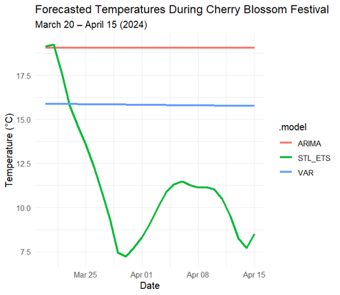

This project creates a forecast using time series tools to predict the weather forecast for Washington D.C. for the time of the Cherry Blossom Festival, ranging from late March to mid April.
Tools: R

This chart shows the forecasted trend produced from the time series model.
⬅ Back to Home